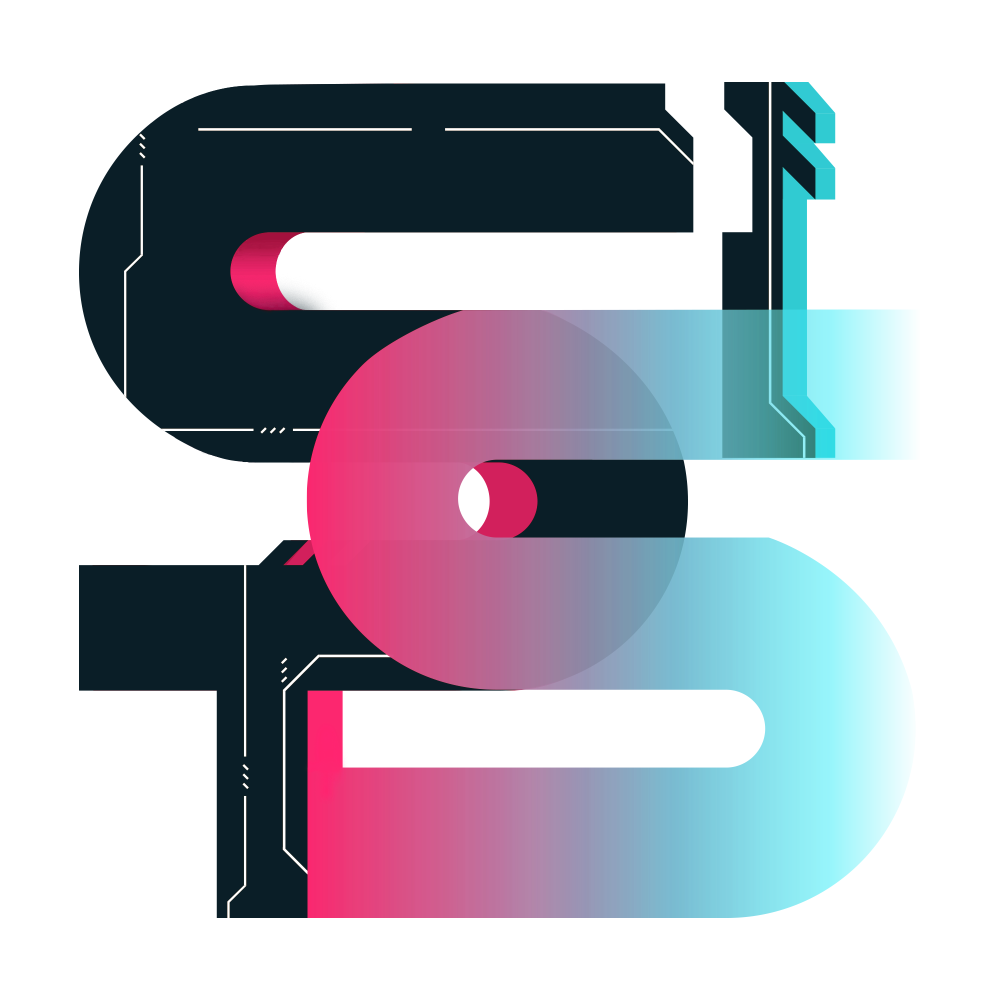

Stones In The Shell
SITS est le premier club de go 100% en ligne affilié à la Fédération Française de Go. C'est le lieu idéal pour débuter et apprendre les fondamentaux du jeu, mais également progresser et atteindre les sommets dans notre ligue interne ! 🌊
N'hésitez pas à venir à notre rencontre gratuitement sur notre Discord ! 👋